Calculation of diversification indicators and other covariates
Summary
Indicators
| Indicator | Data | Format |
|---|---|---|
| perimeter and area of the field | RPG+ | vector |
| mean field size within buffer | RPG+ | vector |
| crop rotation (N-4:N) | RPG+ | vector |
| hedgerows around field | RPG+ & BD Haie Liu 2023 |
vector raster 30m |
| % land cover within buffer | RPG+ & CLCplus | raster 10m |
| edge density | Not available | NA |
Datasets
Registre Parcellaire Graphique (RPG): annual field crop data for the period 2015-2024 available for France on IGN website: https://cartes.gouv.fr/rechercher-une-donnee/dataset/IGNF_RPG. The dataset differentiates 366 crop categories
Geodienste - nutzungsflaechen (Nutzung): Swiss equivalent of the RPG with annual field crop data for the period 2020-2025: https://geodienste.ch/services/lwb_nutzungsflaechen. The data is not entirely open yet but raw data were provided by Selma Cadot. The dataset differentiates 146 categories including hedgerows and semi-natural habitat.
Corine Land Cover plus (CLCplus): land use land cover at European scale with 10m resolution and 11 basic land cover classes, available on Corine Land Monitoring Service https://land.copernicus.eu/en/products/clc-backbone. The data is availble for 2018, 2021, and 2023.
Liu et al. (2023): European tree cover and biomass map at 30m resolution for Europe https://zenodo.org/records/8154445 derived from 3m resolution PlanetScope imagery of 2019.
BD Haie v2 (6.8Gb): hedgerows dataset for France available on the IGN website: https://geoservices.ign.fr/bdhaie. BD Haie v2 was produced from satellite images of 2020-2022.
Land cover class harmonization: list all classes from RPG, Nutzung and CLCplus and how to harmonize them. This file has been completed during WS3 and can be further customized for the project objectives. It groups all crops and land cover classes into 57 groups.
Orchards and vineyards datasets from individual projects were used to completement agricultural land use information for perenial crops in France.
Field observations
| 2016 | 2017 | 2018 | 2019 | 2020 | 2021 | 2022 | 2023 | 2024 | 2025 | TOTAL | |
|---|---|---|---|---|---|---|---|---|---|---|---|
| Agrim2019 | 0 | 0 | 0 | 40 | 0 | 0 | 0 | 0 | 0 | 0 | 40 |
| BACCHUS_OPERA | 0 | 0 | 40 | 38 | 41 | 41 | 39 | 38 | 38 | 0 | 275 |
| BIOMHE | 0 | 0 | 0 | 0 | 40 | 0 | 0 | 0 | 0 | 0 | 40 |
| BISCO | 0 | 27 | 0 | 0 | 0 | 0 | 0 | 0 | 0 | 0 | 27 |
| BVD | 0 | 0 | 0 | 0 | 20 | 28 | 32 | 16 | 41 | 41 | 178 |
| DIVAG | 0 | 0 | 0 | 40 | 0 | 0 | 0 | 0 | 0 | 0 | 40 |
| Herrera2026 | 0 | 0 | 0 | 0 | 30 | 35 | 51 | 0 | 0 | 0 | 116 |
| lepibats | 0 | 0 | 0 | 0 | 0 | 33 | 0 | 0 | 0 | 0 | 33 |
| muesli | 29 | 0 | 0 | 0 | 0 | 0 | 0 | 0 | 0 | 0 | 29 |
| OSCAR | 0 | 0 | 21 | 44 | 50 | 80 | 100 | 102 | 115 | 0 | 512 |
| PestiRed | 0 | 0 | 0 | 0 | 102 | 70 | 84 | 105 | 118 | 103 | 582 |
| Pigot2023 | 0 | 0 | 0 | 0 | 0 | 159 | 144 | 0 | 0 | 0 | 303 |
| SEBIOPAG_Plaine de Dijon | 20 | 20 | 20 | 20 | 20 | 20 | 20 | 20 | 20 | 0 | 180 |
| SEBIOPAG_VcG | 36 | 36 | 36 | 36 | 34 | 34 | 34 | 34 | 17 | 17 | 314 |
| SEBIOPAG_ZAAr | 0 | 0 | 20 | 0 | 0 | 17 | 0 | 16 | 0 | 0 | 53 |
| Seree2022 | 0 | 0 | 0 | 19 | 29 | 0 | 0 | 0 | 0 | 0 | 48 |
| SERIPAGE | 9 | 0 | 0 | 0 | 0 | 0 | 0 | 0 | 0 | 0 | 9 |
| TOTAL | 94 | 83 | 137 | 237 | 366 | 517 | 504 | 331 | 349 | 161 | 2779 |
A more detailled overview of the field observations can be found here
Identification of the crop field
Because of data availability, we will only focus on the observations made in the period 2016-2025 with field coordinates. We identified the crop field from RPG or Nutzung dataset based on the coordinates and the year of the sampling. RPG for 2025 is not yet available so observations in France will be restricted to the period 2016-2024.
| Nobs | in_RPG | in_VineOrchard | Perc | |
|---|---|---|---|---|
| Agrim2019 | 40 | 40 | 0 | 100.00 |
| BACCHUS_OPERA | 275 | 1 | 271 | 98.91 |
| BIOMHE | 40 | 39 | 0 | 97.50 |
| BISCO | 27 | 26 | 0 | 96.30 |
| BVD | 137 | 0 | 137 | 100.00 |
| DIVAG | 40 | 40 | 0 | 100.00 |
| Herrera2026 | 116 | 105 | 0 | 90.52 |
| lepibats | 33 | 30 | 0 | 90.91 |
| muesli | 29 | 29 | 0 | 100.00 |
| OSCAR | 512 | 448 | 11 | 89.65 |
| PestiRed | 339 | 303 | 0 | 89.38 |
| Pigot2023 | 303 | 302 | 0 | 99.67 |
| SEBIOPAG_Plaine de Dijon | 180 | 180 | 0 | 100.00 |
| SEBIOPAG_VcG | 297 | 103 | 0 | 34.68 |
| SEBIOPAG_ZAAr | 53 | 53 | 0 | 100.00 |
| Seree2022 | 48 | 48 | 0 | 100.00 |
| SERIPAGE | 9 | 9 | 0 | 100.00 |
Remarks:
- In total,
88% of the field observations (N=2175) could be linked to a crop field.
- The
RPGdataset is incomplete for some vineyards and orchards. Additional datasets provided by project collaborators improve the characterization of perennial crops.
Field size
We calculated the area and the perimeter of the crop fields corresponding to the samplings.
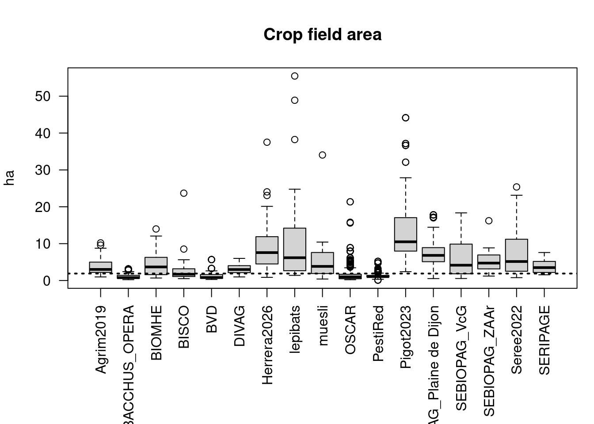
| Min. | 1st Qu. | Median | Mean | 3rd Qu. | Max. | |
|---|---|---|---|---|---|---|
| Agrim2019 | 0.97 | 2.21 | 3.02 | 3.80 | 4.99 | 10.21 |
| BACCHUS_OPERA | 0.23 | 0.58 | 0.78 | 1.06 | 1.40 | 3.15 |
| BIOMHE | 0.68 | 1.59 | 3.69 | 4.48 | 6.29 | 13.99 |
| BISCO | 0.50 | 1.10 | 1.71 | 3.22 | 3.15 | 23.69 |
| BVD | 0.29 | 0.58 | 0.82 | 1.20 | 1.63 | 5.68 |
| DIVAG | 0.97 | 2.21 | 2.98 | 3.17 | 4.02 | 6.01 |
| Herrera2026 | 0.87 | 4.50 | 7.58 | 8.52 | 11.89 | 37.52 |
| lepibats | 1.40 | 2.77 | 6.18 | 11.89 | 13.96 | 55.47 |
| muesli | 0.41 | 1.90 | 3.84 | 5.46 | 7.61 | 34.05 |
| OSCAR | 0.22 | 0.48 | 1.00 | 1.71 | 1.70 | 21.35 |
| PestiRed | 0.10 | 0.97 | 1.06 | 1.32 | 1.40 | 5.19 |
| Pigot2023 | 2.40 | 7.99 | 10.51 | 12.88 | 17.05 | 44.15 |
| SEBIOPAG_Plaine de Dijon | 0.53 | 5.11 | 6.83 | 7.52 | 8.92 | 17.82 |
| SEBIOPAG_VcG | 0.55 | 1.83 | 4.16 | 6.37 | 9.89 | 18.35 |
| SEBIOPAG_ZAAr | 1.21 | 3.16 | 4.73 | 4.96 | 6.94 | 16.22 |
| Seree2022 | 0.79 | 2.54 | 5.15 | 7.36 | 11.12 | 25.38 |
| SERIPAGE | 1.55 | 2.19 | 3.51 | 4.04 | 5.19 | 7.60 |
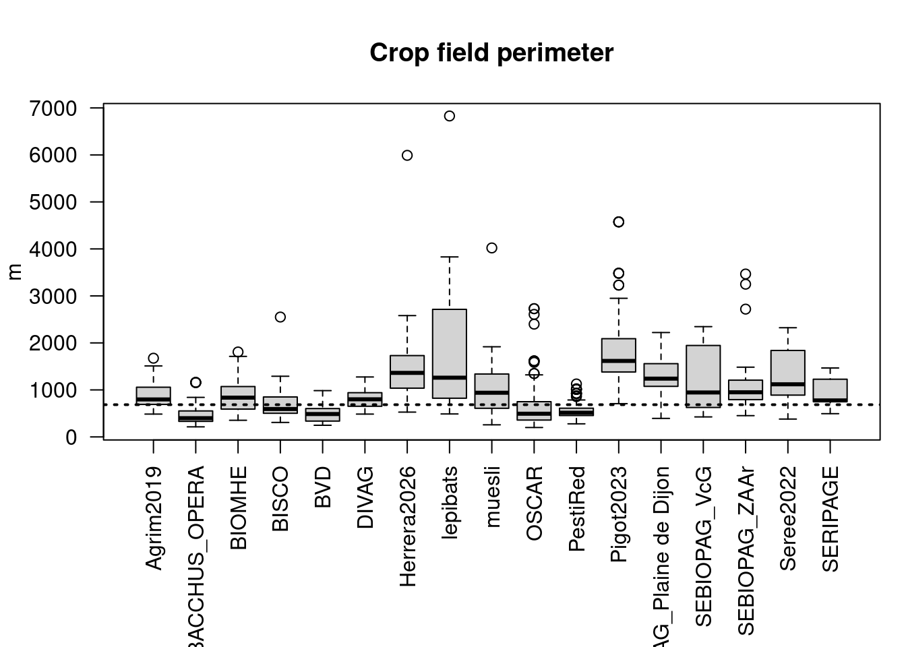
| Min. | 1st Qu. | Median | Mean | 3rd Qu. | Max. | |
|---|---|---|---|---|---|---|
| Agrim2019 | 485.39 | 691.18 | 797.06 | 889.45 | 1053.13 | 1674.45 |
| BACCHUS_OPERA | 214.18 | 330.40 | 398.22 | 446.85 | 552.24 | 1157.85 |
| BIOMHE | 354.03 | 592.12 | 835.73 | 907.71 | 1072.08 | 1807.17 |
| BISCO | 307.54 | 503.97 | 593.59 | 743.08 | 846.90 | 2550.45 |
| BVD | 247.58 | 336.67 | 486.21 | 495.73 | 602.94 | 984.37 |
| DIVAG | 485.39 | 654.90 | 799.78 | 816.22 | 937.89 | 1275.08 |
| Herrera2026 | 527.24 | 1037.48 | 1362.21 | 1429.00 | 1729.93 | 5991.28 |
| lepibats | 488.44 | 824.10 | 1260.50 | 1789.15 | 2670.28 | 6828.99 |
| muesli | 257.24 | 608.61 | 939.47 | 1060.52 | 1338.17 | 4021.15 |
| OSCAR | 200.02 | 358.30 | 493.46 | 583.72 | 749.38 | 2728.54 |
| PestiRed | 278.44 | 454.92 | 513.90 | 551.14 | 611.12 | 1126.50 |
| Pigot2023 | 707.30 | 1381.90 | 1616.60 | 1740.15 | 2090.07 | 4574.97 |
| SEBIOPAG_Plaine de Dijon | 393.53 | 1076.02 | 1240.09 | 1302.12 | 1558.72 | 2220.91 |
| SEBIOPAG_VcG | 425.53 | 625.70 | 945.38 | 1219.19 | 1945.81 | 2346.55 |
| SEBIOPAG_ZAAr | 451.97 | 793.52 | 949.02 | 1061.93 | 1207.41 | 3466.03 |
| Seree2022 | 378.99 | 901.49 | 1119.78 | 1310.95 | 1831.04 | 2322.95 |
| SERIPAGE | 494.30 | 750.53 | 776.57 | 928.22 | 1227.43 | 1466.38 |
There is a strong relation between area and perimeter (Figure 5). In median, field size is 1.9 ha and field perimeter is 685m.
Outliers
Remarks:
The overall pattern of field size per projects are consistent with expectations. Project focusing on vineyards (e.g. Bacchus, OSCAR), orchards (in BVD - Basse Vallée de la Durance) have smaller fields than average; while project focusing on large cereals (e.g. muesli, Plaine de Dijon) have larger fields.
Exploration of outliers shows that:
Field size within buffer
Using the coordinates of the sampling sites, we calculated the average area of all crop fields within a buffer (500m and 1000m).
| B_500m | B_1000m | |
|---|---|---|
| Min. | 0.02 | 0.16 |
| 1st Qu. | 0.76 | 0.73 |
| Median | 1.40 | 1.30 |
| Mean | 2.38 | 1.96 |
| 3rd Qu. | 2.88 | 2.36 |
| Max. | 21.98 | 16.35 |
| NA’s | 2.00 | 1.00 |
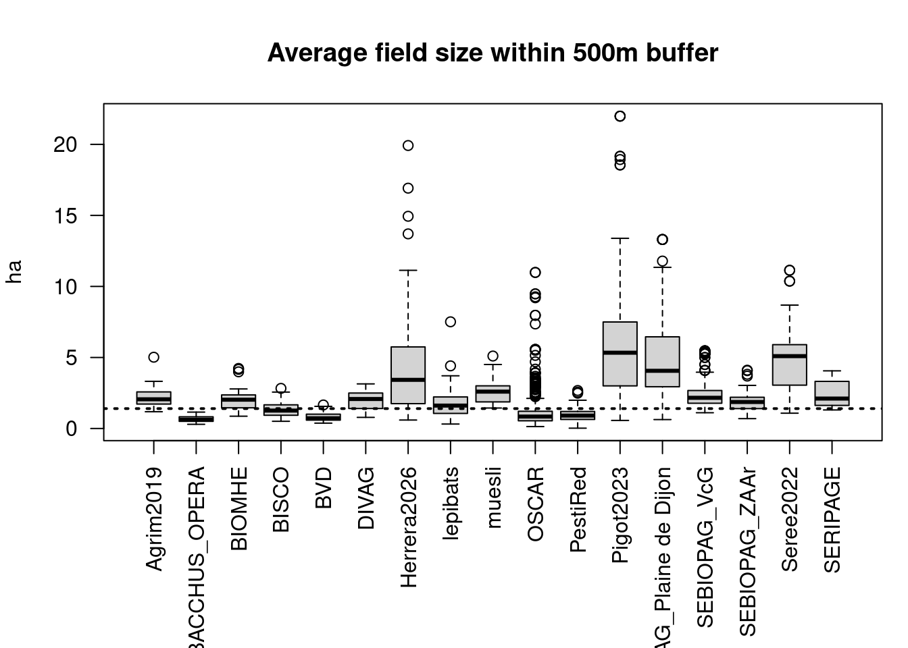
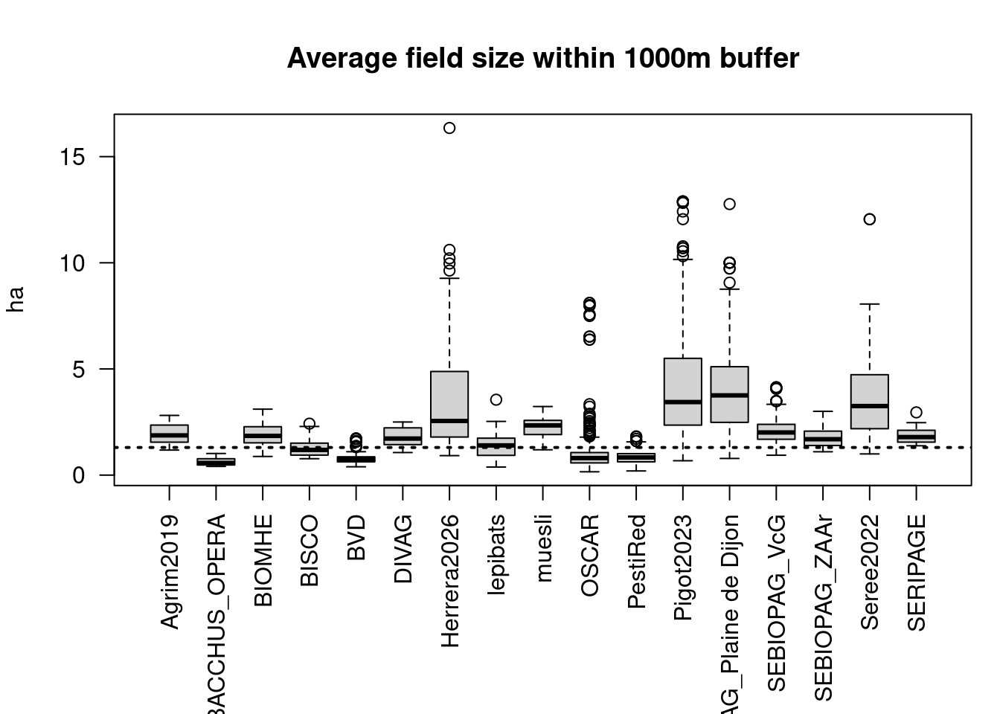
Two observations had no crop fields within 500m of the sampling location (Table 5). These observations (listed in Table 6) should be verified to confirm their proximity to agricultural land.
| Study_ID | Plot_ID | Year | |
|---|---|---|---|
| 1039 | OSCAR | 33_2011_00002 | 2018 |
| 867 | OSCAR | 11_2023_00004 | 2023 |
Outliers
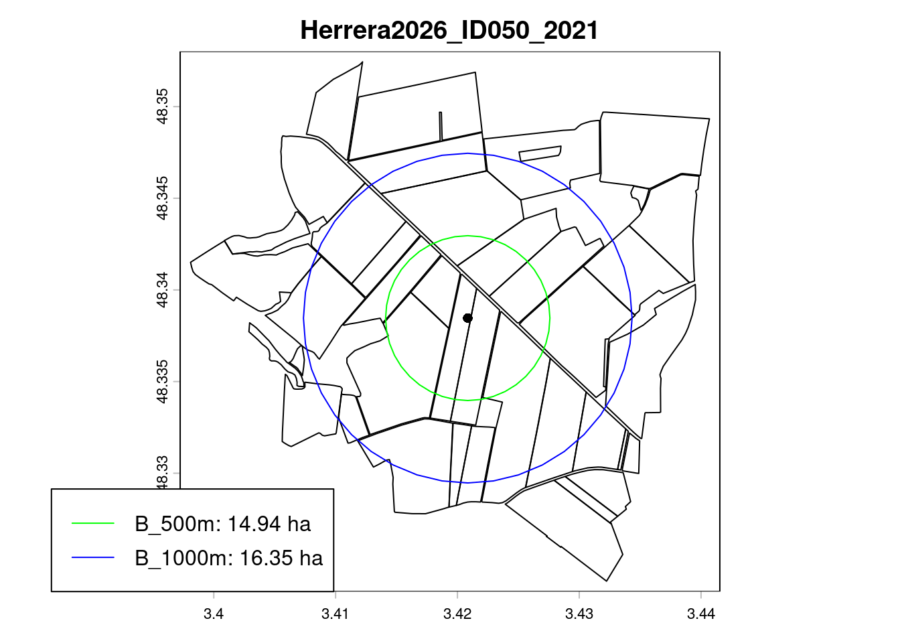
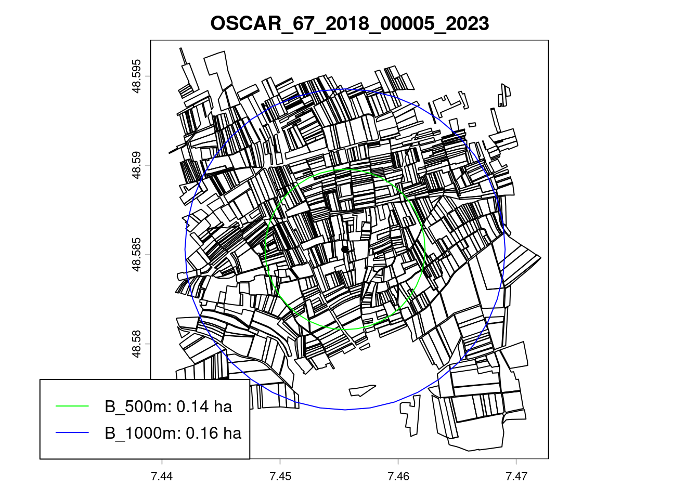
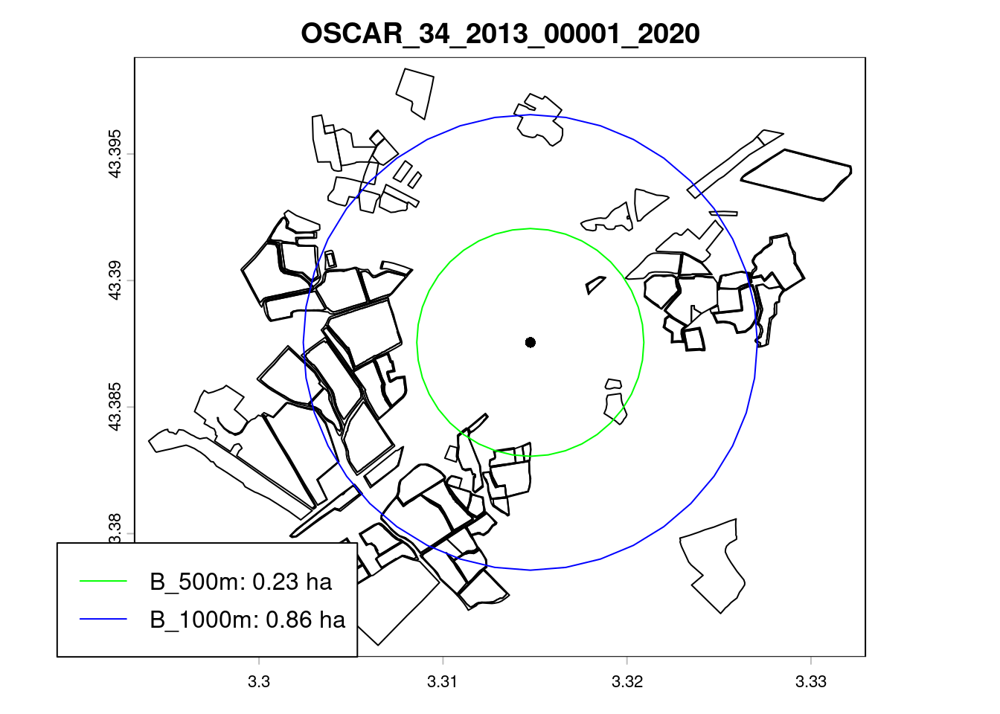
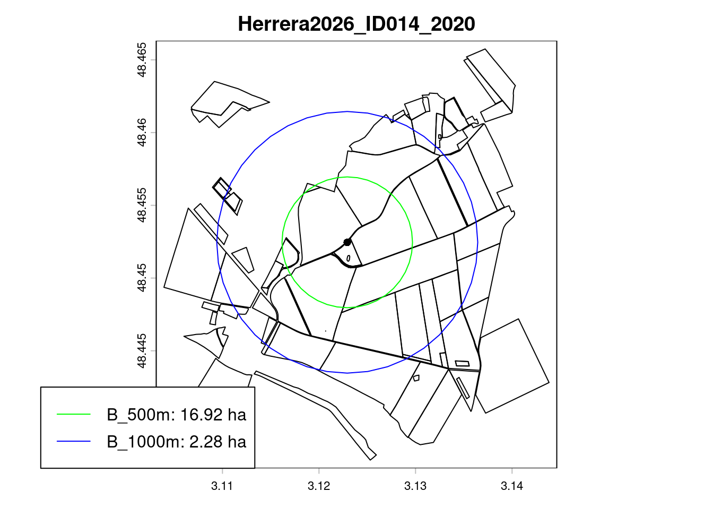
Remarks:
- The field size within buffer is a good proxy for agricultural practices at landscape level.
- The values with a buffer of 500m and 1km are strongly correlated (r =
0.86). Yet values with a buffer of 1km are slightly less extreme (higher minimum and lower maximum).
Crop rotation (N-4:N)
| 0 | 1 | 2 | 3 | 4 | 5 | |
|---|---|---|---|---|---|---|
| Agrim2019 | 0 | 0 | 0 | 0 | 1 | 39 |
| BACCHUS_OPERA | 1 | 0 | 0 | 1 | 2 | 271 |
| BIOMHE | 1 | 0 | 1 | 0 | 0 | 38 |
| BISCO | 1 | 0 | 0 | 26 | 0 | 0 |
| BVD | 0 | 0 | 0 | 0 | 0 | 137 |
| DIVAG | 0 | 0 | 0 | 0 | 0 | 40 |
| Herrera2026 | 9 | 0 | 0 | 0 | 2 | 105 |
| lepibats | 2 | 1 | 4 | 0 | 3 | 23 |
| muesli | 0 | 0 | 29 | 0 | 0 | 0 |
| OSCAR | 34 | 1 | 26 | 36 | 79 | 336 |
| PestiRed | 1 | 2 | 7 | 38 | 144 | 147 |
| Pigot2023 | 1 | 0 | 0 | 0 | 0 | 302 |
| SEBIOPAG_Plaine de Dijon | 0 | 0 | 20 | 20 | 20 | 120 |
| SEBIOPAG_VcG | 15 | 22 | 35 | 35 | 126 | 64 |
| SEBIOPAG_ZAAr | 0 | 0 | 0 | 0 | 20 | 33 |
| Seree2022 | 0 | 0 | 0 | 0 | 0 | 48 |
| SERIPAGE | 0 | 0 | 9 | 0 | 0 | 0 |
The number of observations in the period N-4:N in Table 7 is a results of the number of observations per year (Table 1). Most observations have 5 years of data on crop rotation (69%, N=1703). The following figures focus only on these observations with complete crop-rotation information over the 5-year period.
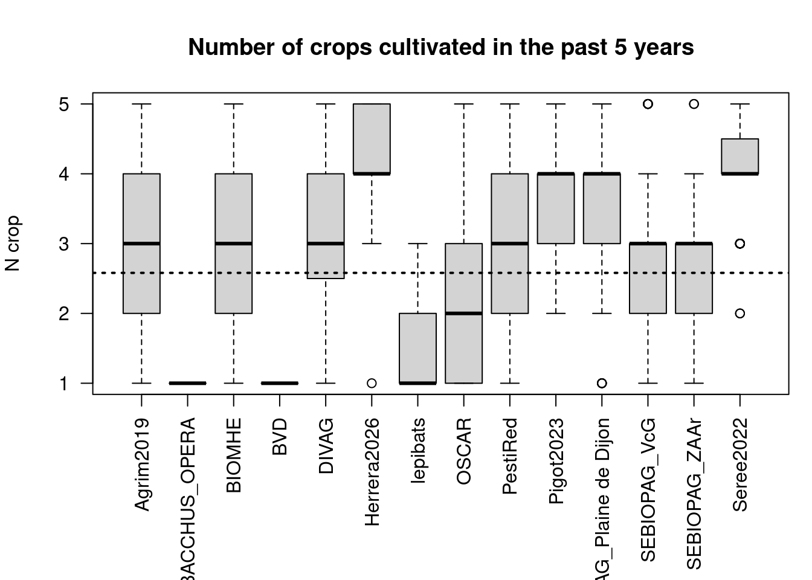
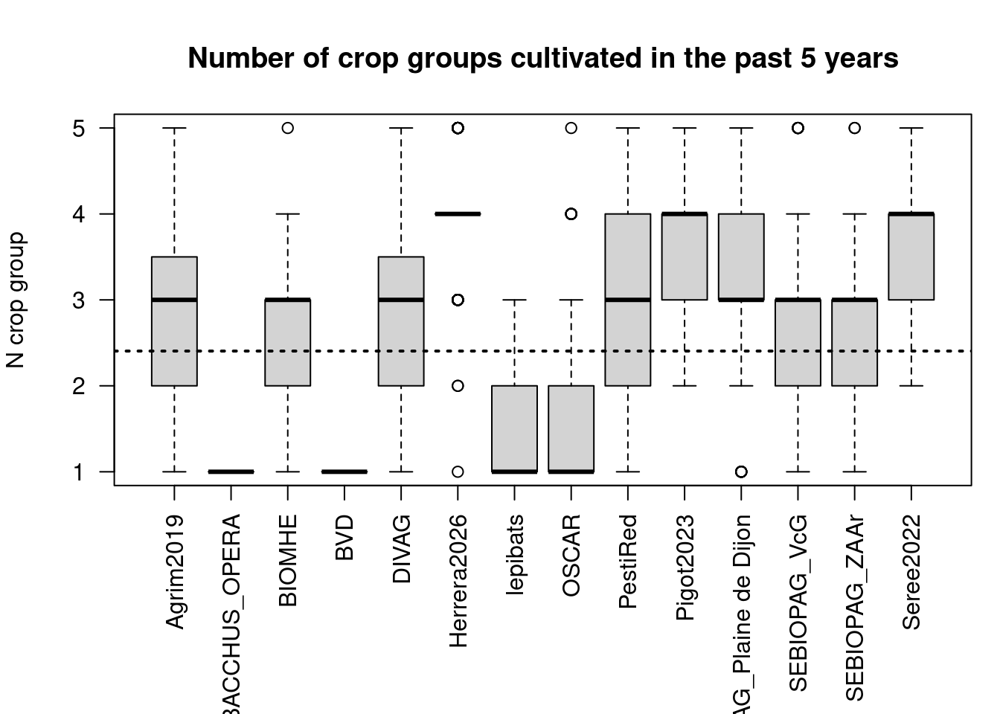
From the 1703 observations with complete crop rotation information in [N-4:N], 546 have the same crop for the whole time period, while 121 fields have five different crop groups in the past 5 years (Figure 16).
| Var1 | Freq |
|---|---|
| vignes | 491 |
| vergers | 137 |
| ble_tendre_hiver,colza_hiver,orge_hiver | 73 |
| divers,vignes | 26 |
| gel_sans_prod,vignes | 24 |
| ble_tendre_hiver,colza_hiver,proteagineux | 18 |
| ble_tendre_hiver,colza_hiver,orge_hiver,proteagineux | 16 |
| ble_tendre_hiver,colza_hiver,orge_printemps,proteagineux | 16 |
| ble_tendre_hiver,mais_ensilage | 14 |
| ble_dur_hiver,ble_tendre_hiver,tournesol | 13 |
| ble_tendre_hiver,colza_hiver,lin_non_textile,proteagineux | 13 |
| ble_tendre_hiver,prairies_temporaires | 13 |
| autres_cult_indus,ble_tendre_hiver,orge_hiver | 11 |
| ble_tendre_hiver,mais_grain_semence | 10 |
| mais_grain_semence,vignes | 10 |
| ble_dur_hiver,colza_hiver | 9 |
| ble_tendre_hiver,colza_hiver,mais_grain_semence,proteagineux | 9 |
| ble_dur_hiver,ble_tendre_hiver,colza_hiver,orge_printemps | 8 |
| ble_tendre_hiver,colza_hiver,mais_ensilage,orge_hiver | 8 |
| autres_cult_indus,ble_tendre_hiver,mais_grain_semence,orge_hiver | 7 |
Remarks:
- The level of crop rotation depends strongly on the project targeting either annual vs perenial cropping systems.
- In France, the spatial dataset about orchard and vineyards was set as constant during the study period, which artificially ignores any changes in agricultural practices in these perennial systems. So crop rotation metrics should be ignored for the perennial crops in France.
Hedgerows length
We overlaid the field as defined in RPG+ (+ a 10m buffer) with the tree cover density from Liu et al. 2023 as well as with national information on hedgerows (BD Haie and Nutzung). Because BD Haie provides linear hedgerows, hedgerow area was estimated by multiplying hedgerow length by 10m.
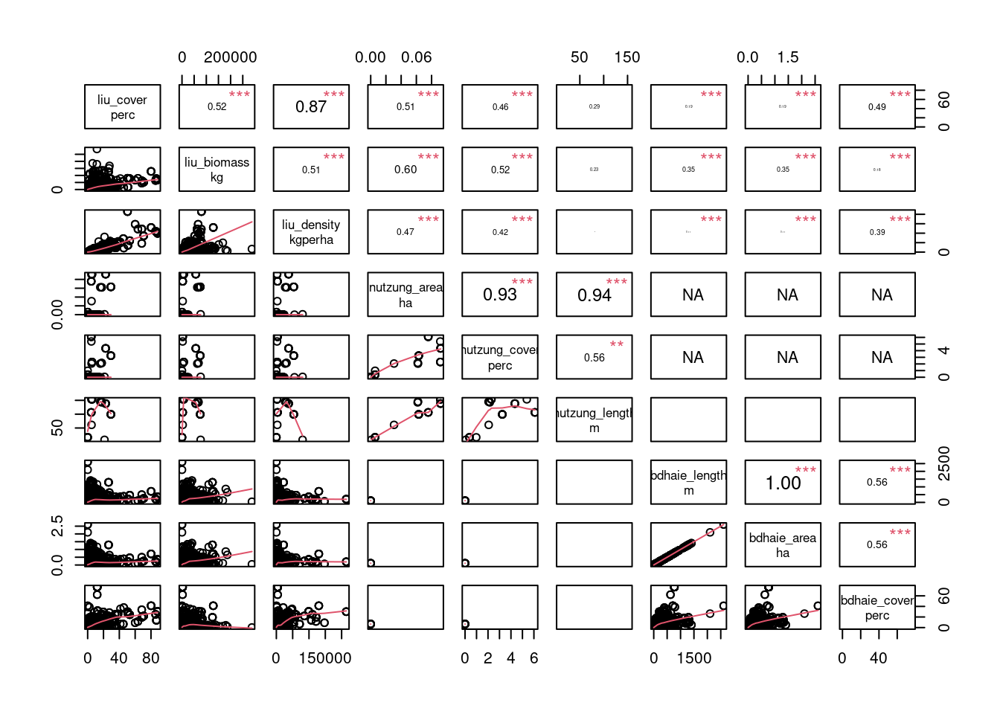
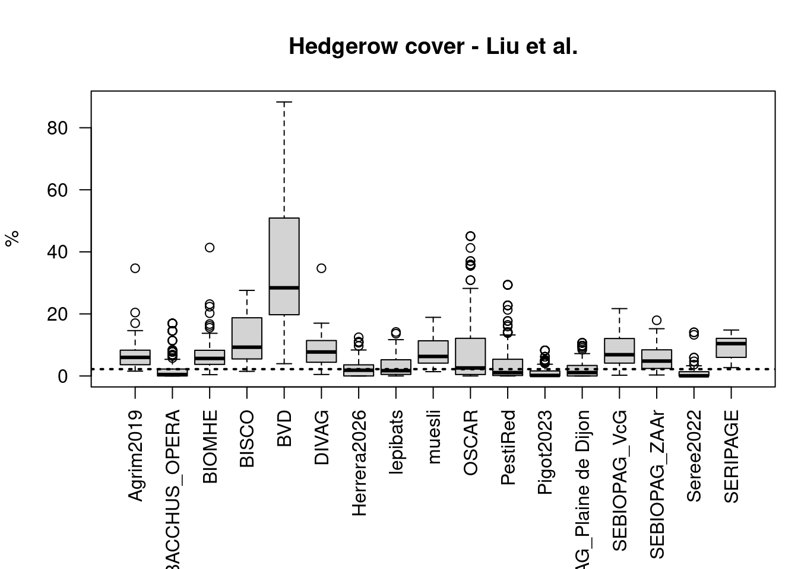
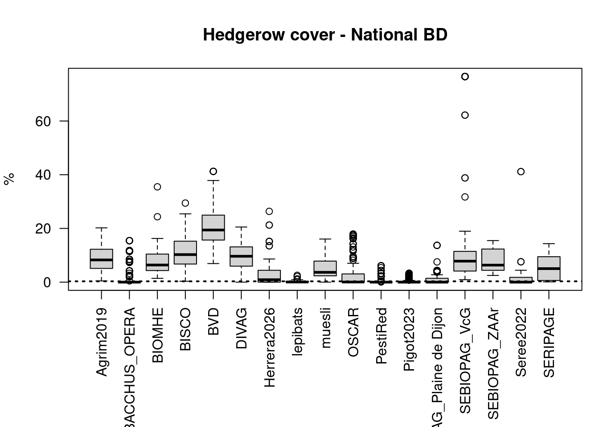
| Liu | National | |
|---|---|---|
| Agrim2019 | 100.00 | 100.00 |
| BACCHUS_OPERA | 40.73 | 26.91 |
| BIOMHE | 92.50 | 97.50 |
| BISCO | 96.30 | 96.30 |
| BVD | 100.00 | 100.00 |
| DIVAG | 92.50 | 95.00 |
| Herrera2026 | 56.03 | 54.31 |
| lepibats | 54.55 | 48.48 |
| muesli | 100.00 | 96.55 |
| OSCAR | 58.01 | 47.07 |
| PestiRed | 45.72 | 7.67 |
| Pigot2023 | 28.71 | 38.61 |
| SEBIOPAG_Plaine de Dijon | 55.00 | 40.00 |
| SEBIOPAG_VcG | 84.51 | 93.27 |
| SEBIOPAG_ZAAr | 94.34 | 100.00 |
| Seree2022 | 29.17 | 45.83 |
| SERIPAGE | 100.00 | 100.00 |
Outliers
Remarks:
- There is a relatively good correlation among the percentage of hedgerows cover in Liu_2023 dataset and the national dataset (r=
0.49for France, and0.46for Switzerland).
- Liu et al. 2023 might classify some orchards as tree cover, leading to higher estimated hedgerow cover in orchards (e.g. Figure 21).
- In Switzerland, the percentage of fields with hedgerows is extremely low (
7.67%, Table 9) while the values are not so different when considering Liu_2023. This observation seems to indicate a difference in how hedgerows were defined in France and in Switzerland and would suggest the use of Liu_2023 when comparing both datasets.
Land cover within buffer
| n_classes | av_perc_rpg | |
|---|---|---|
| Agrim2019 | 36 | 76.36 |
| BACCHUS_OPERA | 32 | 70.19 |
| BIOMHE | 40 | 71.01 |
| BISCO | 30 | 70.56 |
| BVD | 46 | 47.46 |
| DIVAG | 38 | 74.85 |
| Herrera2026 | 51 | 77.33 |
| lepibats | 36 | 52.21 |
| muesli | 36 | 73.81 |
| OSCAR | 51 | 61.48 |
| PestiRed | 40 | 56.05 |
| Pigot2023 | 47 | 78.01 |
| SEBIOPAG_Plaine de Dijon | 43 | 68.40 |
| SEBIOPAG_VcG | 44 | 75.64 |
| SEBIOPAG_ZAAr | 45 | 73.34 |
| Seree2022 | 42 | 76.51 |
| SERIPAGE | 28 | 76.63 |
After grouping, there are 54 different categories covered by the 1000m buffers .
forest vignes ble_tendre_hiver
15.27 14.07 10.82
permanent.herbaceous prairies_permanentes sealed
9.21 6.00 5.25
prairies_temporaires colza_hiver low.growing.woody.plants
3.60 3.36 3.07
orge_hiver
3.07 In average, 67 % of the buffer areas are filled with land cover classes from RPG+ (Table 10). The remaining 33% are filled with CLCplus classes, especially forest (15.3%), permanent harbaceous (9.2%) and sealed (5.3%) (Table 11).
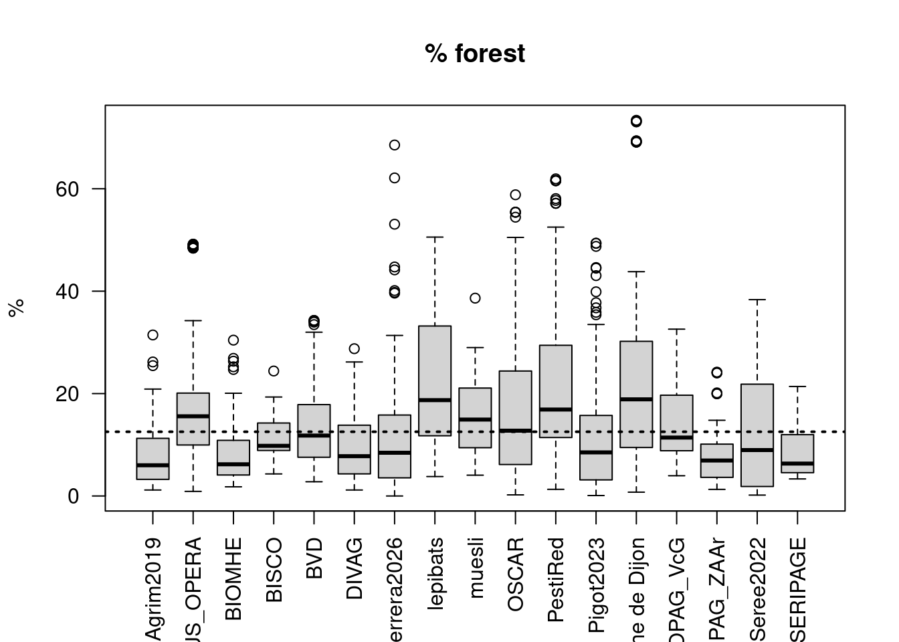
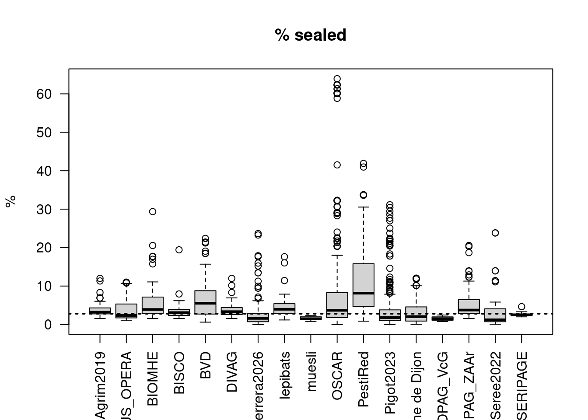
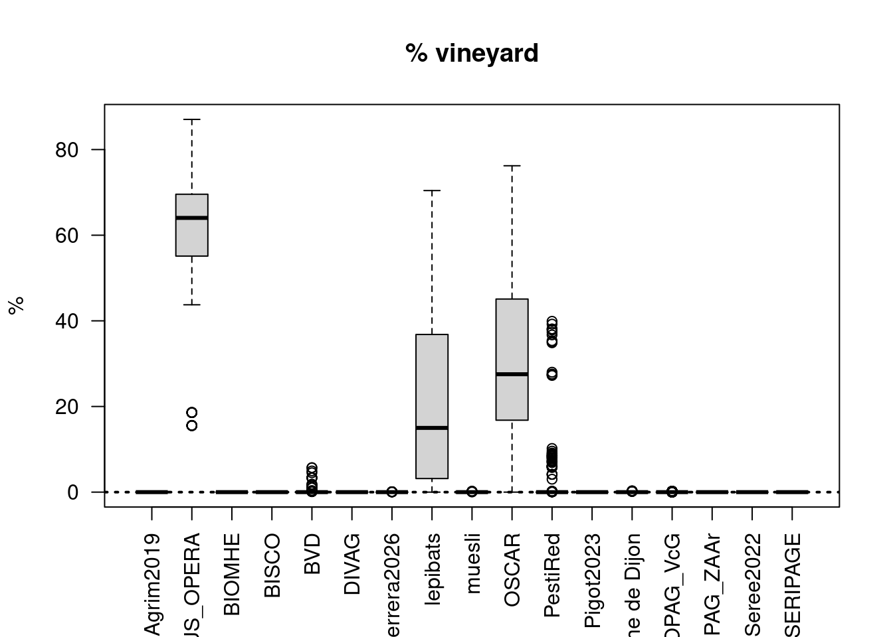
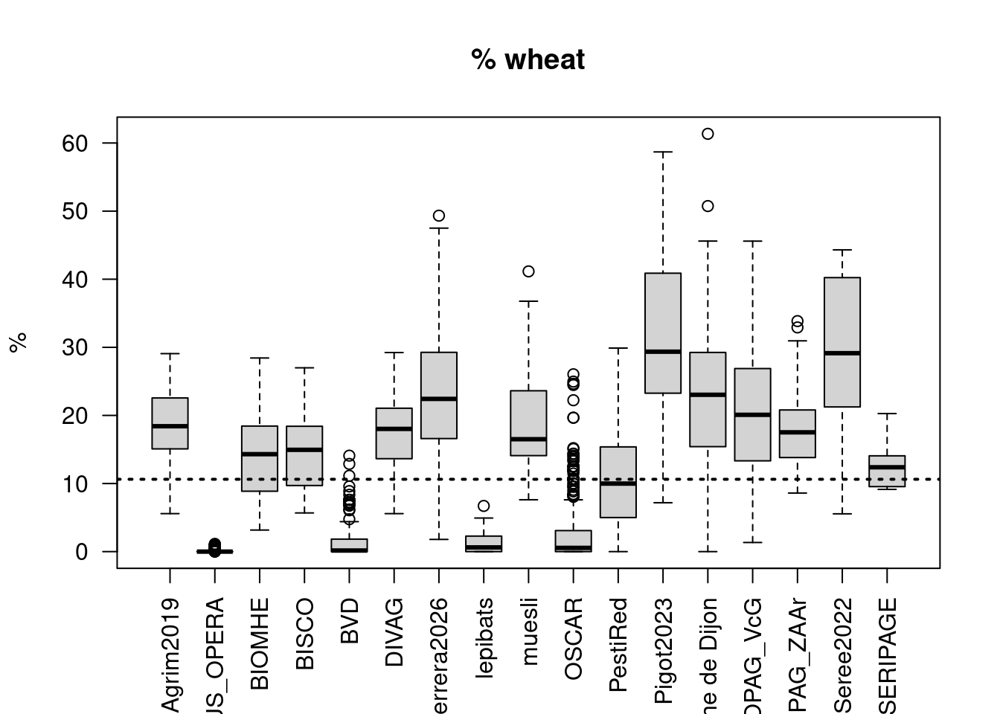
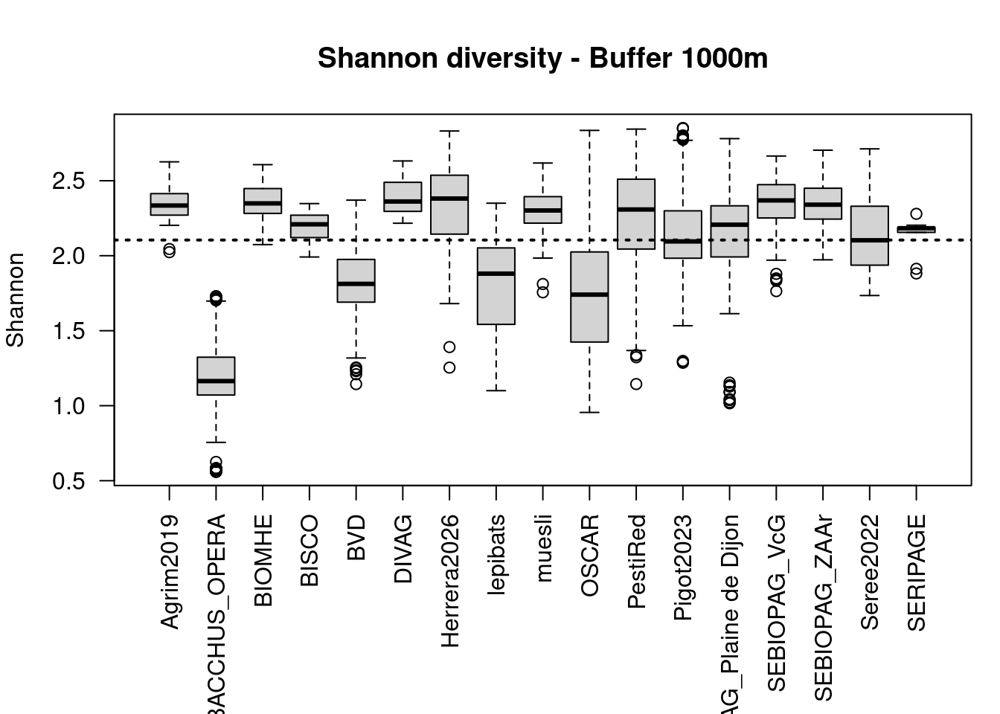
| Min. | 1st Qu. | Median | Mean | 3rd Qu. | Max. | |
|---|---|---|---|---|---|---|
| Agrim2019 | 2.02 | 2.27 | 2.33 | 2.34 | 2.41 | 2.63 |
| BACCHUS_OPERA | 0.56 | 1.07 | 1.16 | 1.15 | 1.32 | 1.73 |
| BIOMHE | 2.07 | 2.28 | 2.35 | 2.35 | 2.44 | 2.61 |
| BISCO | 1.99 | 2.12 | 2.21 | 2.19 | 2.27 | 2.35 |
| BVD | 1.14 | 1.69 | 1.81 | 1.82 | 1.98 | 2.37 |
| DIVAG | 2.22 | 2.30 | 2.36 | 2.39 | 2.48 | 2.63 |
| Herrera2026 | 1.25 | 2.15 | 2.38 | 2.32 | 2.53 | 2.83 |
| lepibats | 1.10 | 1.54 | 1.88 | 1.78 | 2.05 | 2.35 |
| muesli | 1.76 | 2.22 | 2.30 | 2.27 | 2.39 | 2.62 |
| OSCAR | 0.96 | 1.42 | 1.74 | 1.75 | 2.02 | 2.84 |
| PestiRed | 1.14 | 2.04 | 2.31 | 2.22 | 2.51 | 2.84 |
| Pigot2023 | 1.29 | 1.98 | 2.10 | 2.14 | 2.30 | 2.85 |
| SEBIOPAG_Plaine de Dijon | 1.02 | 1.99 | 2.21 | 2.13 | 2.33 | 2.78 |
| SEBIOPAG_VcG | 1.76 | 2.25 | 2.37 | 2.35 | 2.47 | 2.66 |
| SEBIOPAG_ZAAr | 1.97 | 2.24 | 2.34 | 2.34 | 2.45 | 2.70 |
| Seree2022 | 1.73 | 1.94 | 2.10 | 2.14 | 2.33 | 2.71 |
| SERIPAGE | 1.88 | 2.16 | 2.18 | 2.13 | 2.19 | 2.28 |
Remarks:
- All buffers include some amount of forest (5-20%) and sealed area (5-10%), while the crop composition is highly project specific with project with perrenial crops (Bacchus, BVD, Oscar) being less diverse than project focusing on annual crops.
Correlation
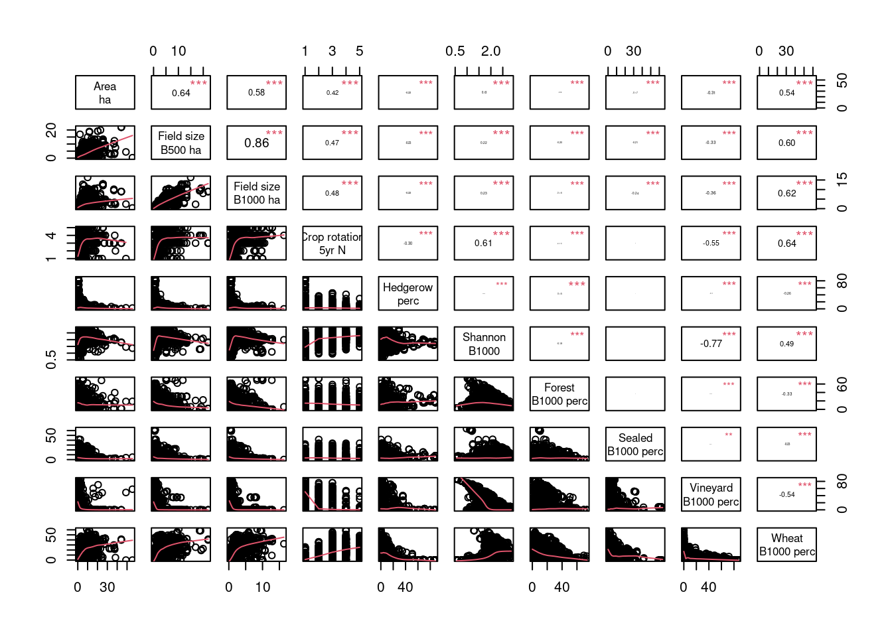
Remarks:
- There is a high positive correlation between field size and the median field size within buffer : the size of the field is related to the average field size in the landscape.
- There is a high positive correlation between spatial and temporal crop diversity (land cover within a buffer and crop rotation).
- Landscape with high percentage of vineyards have low diversity of landscape and low crop rotation. On the contrary, landscape with high percentage of wheat have larger field size, and higher diversity of crop spatially and temporally.
Summary
Material and method
To characterize the cropping practices, we used the Registre Parcellaire Graphique (RPG) for France and the Geodienste - nutzungsflaechen (Nutzung) for Switzerland. The two datasets are vectorial spatial datasets that provide crop field boundaries and categorize crops into precise categories: 366 crops are considered in France, and 146 in Switzerland. RPG is available annually since 2015 and Nutzung since 2019 (to be confirmed). Because RPG is known to lack data for small vineyards and orchards (ref needed?), we complemented the crop data with local datasets for the samples made in regions dominated by perennial cropping systems.
We intersected the sampling coordinates with the national crop dataset corresponding to the sampling year and extracted the perimeter and the area of the fields. Additionally, we calculated the mean field size within a buffer of 1km around the sampling position. When available, we also extracted information about the crops in the four years before sampling using national crop dataset from previous years.
We complemented the crop dataset with the land-use/land-cover data from Corine Land Cover plus (CLCplus). The dataset characterizes the land cover into 11 classes and is available for Europe with a spatial resolution of 10 m. There has been three releases: 2018, 2021, and 2023. To estimate the land cover within a 1km buffer around the sampling location, we used preferentially the national crop dataset of the sampling year filled with CLCplus data closest to the year of sampling. We grouped the land cover and crop classes into 57 classes and calculated the Shannon diversity index of the simplified land cover classes.
Hedgerow density was quantified from national datasets: BD Haies v2 for France in 2021 and Geodienste - nutzungsflaechen for Switzerland in 2023. or Hedgerow density was quantified using European dataset (Liu et al. 2023) providing estimates of the cover and the biomass of trees at 30m resolution for 2019. We extracted the length/area of hedgerows within the field and a 10m buffer around them.
All analyses were performed in R 4.4.1 (R Core Team 2024) using terra (Hijmans et al. 2026) and exactextract (Baston 2023) packages.
Results
In total, 88 % of fields observations (N=2175) could be assigned to a crop field for the year of sampling. Additionally, most observations have 5 years of data on crop rotation (69%, N=1703).
References
Baston, Daniel. 2023. Exactextractr: Fast Extraction from Raster Datasets Using Polygons. https://CRAN.R-project.org/package=exactextractr.
Hijmans, Robert J., Andrew Brown, and Márcia Barbosa. 2026. Terra: Spatial Data Analysis. https://CRAN.R-project.org/package=terra.
Institut national de l’information géographique et forestière (IGN). 2024. BD Haie v2: Couche nationale de référence des haies linéaires en France métropolitaine. https://geoservices.ign.fr/bdhaie.
Institut national de l’information géographique et forestière (IGN). 2025. Registre Parcellaire Graphique (RPG) Version 2.0 - Millésime 2015-2025. https://cartes.gouv.fr/rechercher-une-donnee/dataset/IGNF_RPG.
Konferenz der kantonalen Geoinformations- und Katasterstellen (KGK). 2025. Nutzungsflächen (Landwirtschaftliche Bewirtschaftung) - MGDM ID 153.1, Datenstand 2020-2025. https://geodienste.ch/services/lwb_nutzungsflaechen.
Liu, Siyu, Martin Brandt, Thomas Nord-Larsen, et al. 2023. “The Overlooked Contribution of Trees Outside Forests to Tree Cover and Woody Biomass Across Europe.” Science Advances 9 (37): eadh4097. https://doi.org/10.1126/sciadv.adh4097.
R Core Team. 2024. R: A Language and Environment for Statistical Computing. R Foundation for Statistical Computing. https://www.R-project.org/.